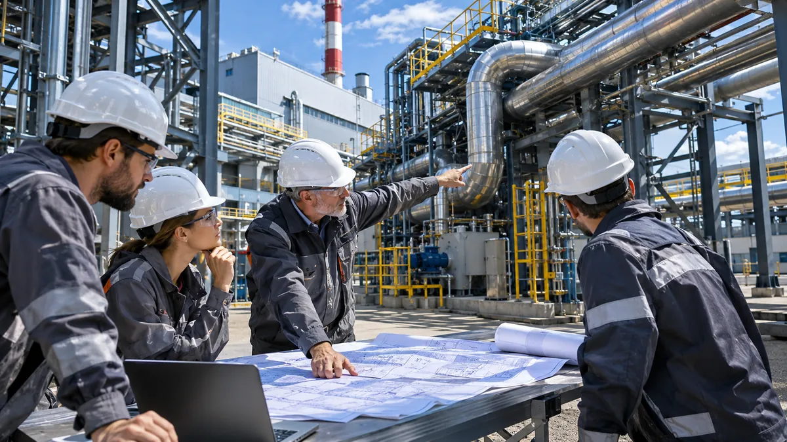
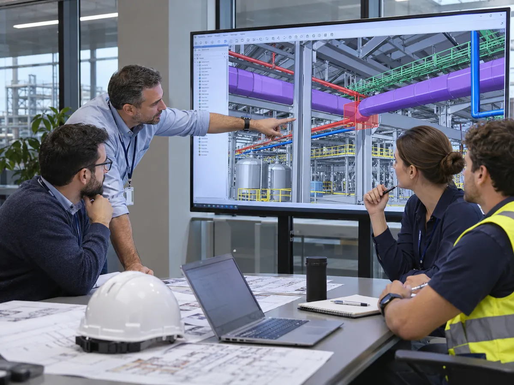
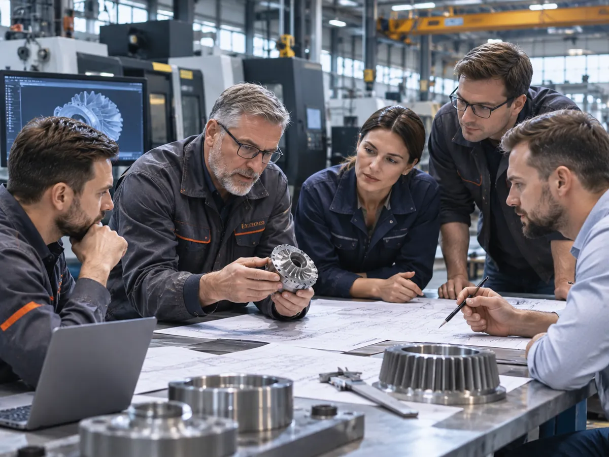

Инженерные обследования
Исходное состояние, ограничения, оборудование, действующие сети.
Помогаем сформировать техническое задание и определить необходимый состав инженерных компетенций для проектирования, модернизации и строительства.

Инженерная подготовка
Техническое задание определяет состав обследований, исходных материалов и привлекаемых специалистов.
Исходное состояние, ограничения, оборудование, действующие сети.
Сведение архитектуры, технологических требований и инженерных систем.
Декомпозиция задачи, оценка технических вариантов и взаимодействие профильных участников.
Ценность
Фиксируем исходные параметры и вопросы до коммерческого предложения.
Разделяем обязательные исследования, проектирование и реализацию.
Участники и разрешительные возможности проверяются под конкретную задачу.
Процесс
Площадка, документация, требования и ограничения.
Специалисты, методы, возможные согласования и этапы.
Письменное предложение после уточнения данных.

Обсуждение инженерной модели промышленного объекта

Анализ конструкций, оборудования и технической документации
Расскажи, какой объект или задача перед тобой. Уточним исходные данные и формат работы с профильными исполнителями.